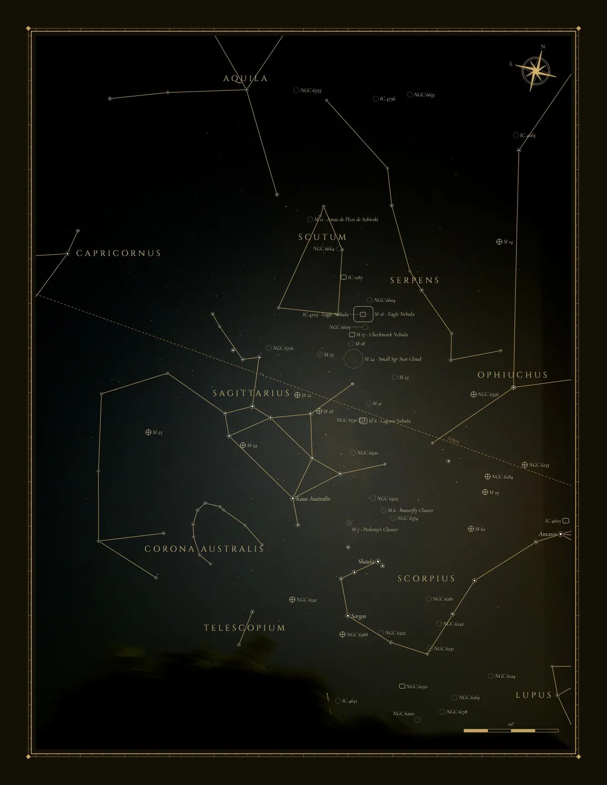
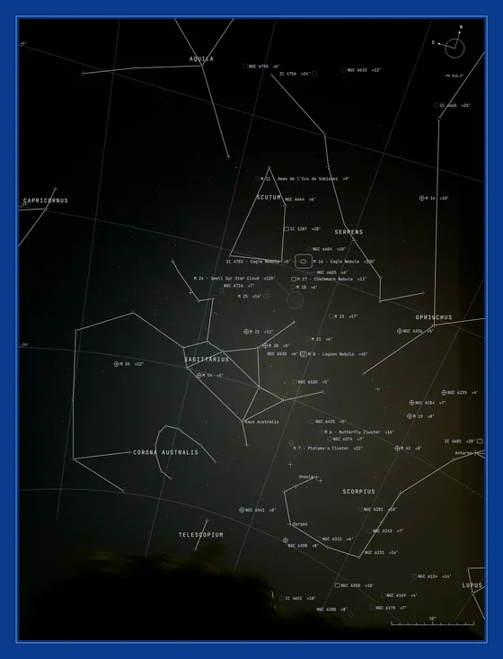
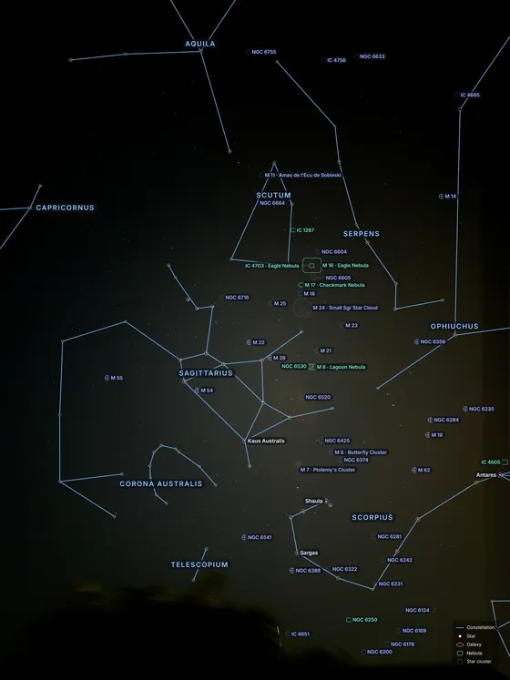
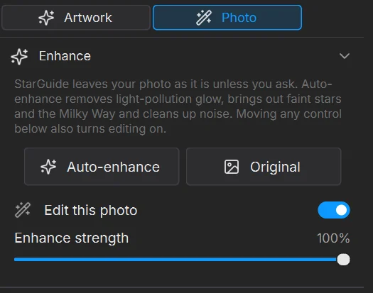
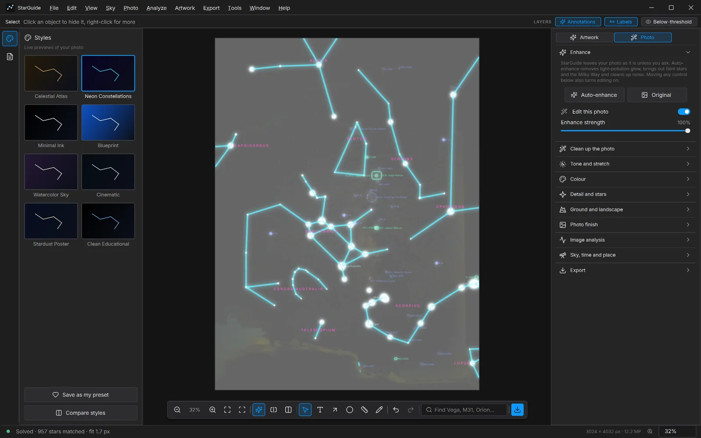
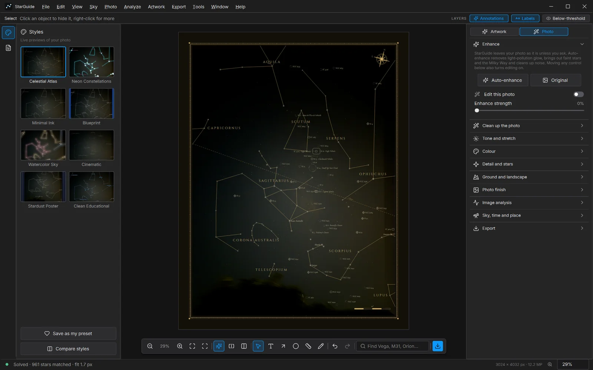
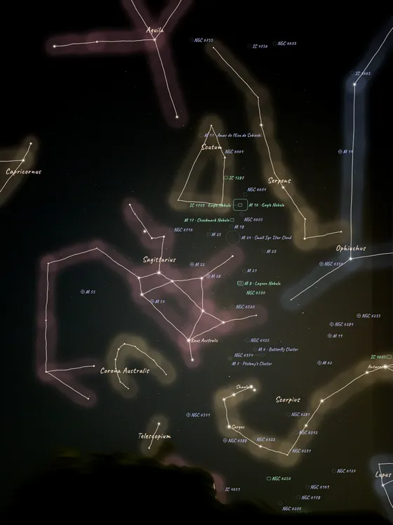
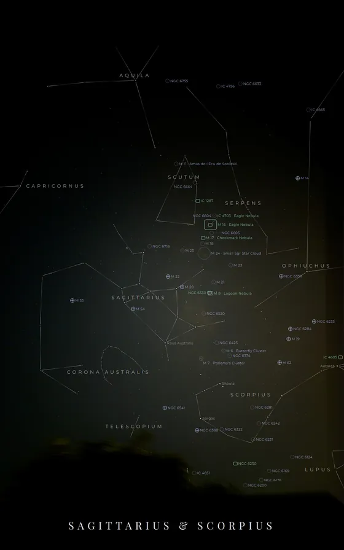
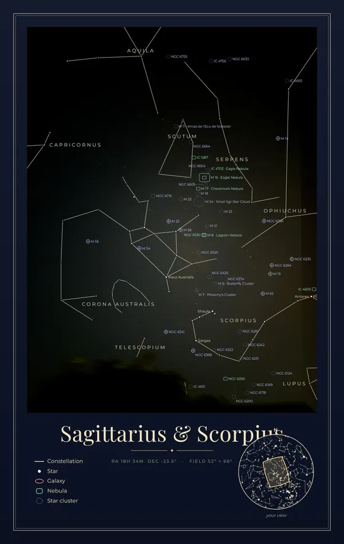
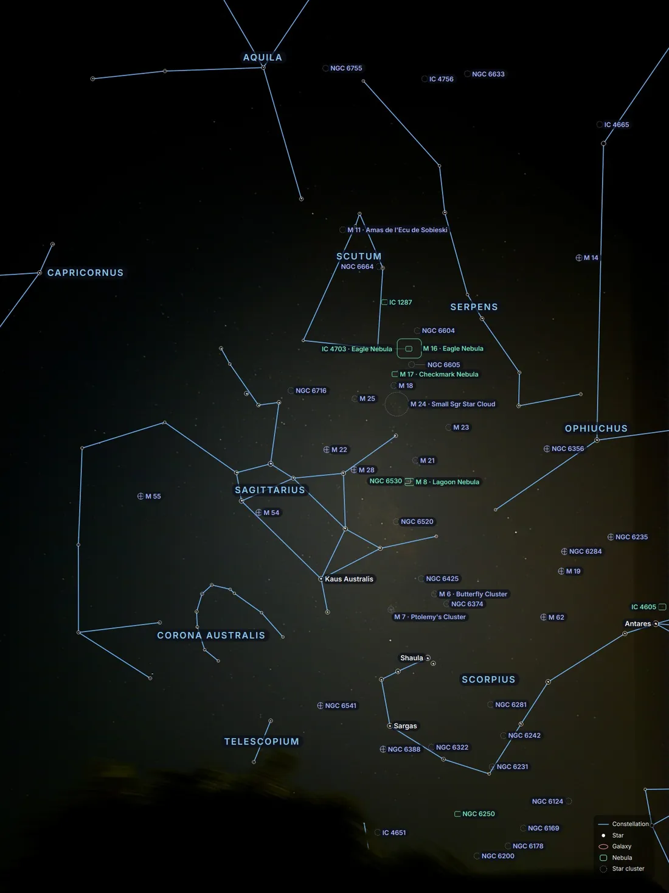

Free for Windows · works offline
Know exactly what you photographed.
Drop in a night-sky photo. StarGuide recognises the stars on your own computer and turns it into constellation artwork to print, share or keep.

961 stars matched in this phone photo.
- 8art styles, all adjustable
- 961stars matched in the photo above
- 6ways to export, up to 16-bit TIFF
- 0accounts needed; photos stay on your PC
How it works
From a photo to a finished chart in three steps.
No star-chart knowledge needed.
-
01
Drop a photo
Phone shots, DSLR frames, tracked astrophotos. JPG, PNG, TIFF, HEIC and most camera RAW files.
-
02
Stars are recognised
Offline plate solving matches the star pattern to find exactly where your camera pointed. No upload, no account.
-
03
Pick a style, export
Choose one of eight looks, tweak it, and save as PNG, JPG, 16-bit TIFF, SVG, PDF or layers.
Your sky, named.
Your photos stay yours.
Recognition, catalogues and rendering all run on your computer.
What it does
Built for people who photograph the night.
From a phone on a windowsill to a tracked camera in a dark-sky field.

Finds exactly where you were pointing
StarGuide matches the pattern of stars in your picture against its built-in catalogues, entirely on your computer. You get precise sky coordinates, field of view and a grid you can trust.
- Works offline, no account
- Handles phone and camera photos
- Your photos never leave the PC

Names what is actually in frame
Constellation figures, bright stars, Messier and NGC objects, planets and the Moon, placed so labels do not collide with each other.
- Colour-coded by object type
- Collision-free label placement
- Toggle any layer on or off
Eight styles, endlessly adjustable
From vintage gold atlas to glowing neon, each style is a starting point. Change colours, fonts, line weight and frames until it is yours.
- Atlas, Neon, Ink, Blueprint and more
- Full control of colour, type and lines
- Print-ready poster layouts

Your photo stays as shot, unless you choose
Optional clean-up, stretch, colour calibration and detail tools are there when you want them. Nothing is applied behind your back.
- Opt-in, never automatic
- One-click Auto-enhance or manual controls
- Back to Original at any time
More frames, cleaner sky
Combine several exposures for less noise, or point StarGuide at a whole folder and process every photo in one go.
- Stack exposures of the same sky
- Batch-process an entire folder
- One go, start to finish
Ready for the wall, the web or your editor
Export a flat image, a 16-bit TIFF for serious editing, scalable SVG, a print-ready PDF, or separate layers to finish in your own editor.
- Print-ready PDF and vector SVG
- 16-bit TIFF for editing
- Layered output
Inside the app
A calm, focused workspace.
Pick a style on the left, fine-tune on the right, export from the toolbar. Real screenshots, taken on Windows.


Screenshots of the Windows app. The photo is shown as shot: editing is switched off. Tap an image to zoom.
Styles
Same stars. Eight moods.
All eight were made by StarGuide from the same phone photo. Click one to enlarge.
- Celestial AtlasVintage gold star chart
- Neon ConstellationsGlowing lines
- Minimal InkQuiet, thin lines
- BlueprintTechnical drawing

Watercolor SkySoft painterly washes
CinematicFilm-like title card
Stardust PosterFramed print
Clean EducationalMade for learning


Download
Free, and yours to keep.
StarGuide Free Edition for Windows 10 and 11.
macOS
Planned
Not available yetLinux
Planned
Not available yetInstall in a minute
- Download the zip from the releases page.
- Unzip the folder anywhere you like. No installer.
- Run
StarGuide.exe.
StarGuide is a new independent app and is not code-signed yet, so SmartScreen warns about an unknown publisher. Click More info, then Run anyway.
At a glance
- System
- Windows 10 / 11, 64-bit
- Download
- 260 MB zip (about 430 MB unzipped)
- Install
- Unzip and run, no installer
- Internet
- Not needed
- Account
- None
- Price
- Free Edition
FAQ
Questions, answered.
The short answers.
Windows says "unknown publisher". Is it safe?
StarGuide is a new independent app and is not code-signed yet, so Windows SmartScreen shows a warning. Click More info, then Run anyway.
Does it need the internet?
No. Star recognition, catalogues and rendering all run on your computer. Only optional extras (online solving, satellite data, update check) use the internet, and only when you switch them on.
What photos work?
JPG, PNG, TIFF, HEIC and most camera RAW files, from phone shots to wide-field astrophotos.
Is it really free?
Yes. This version is free to use and keep. Future versions may add paid editions, but the copy you download stays yours.
Will there be a Mac or Linux version?
They are planned, but only Windows is available today.
Find out what is in your sky.
Free for Windows. Works offline. Your photos never leave your computer.